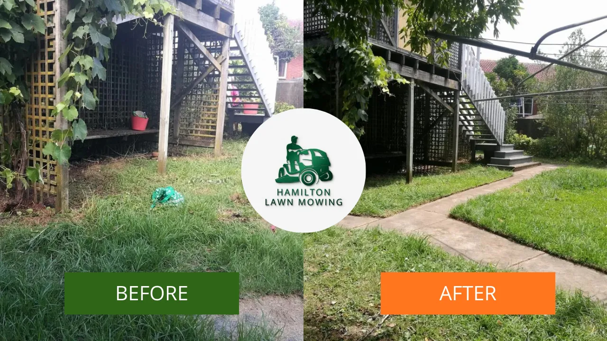
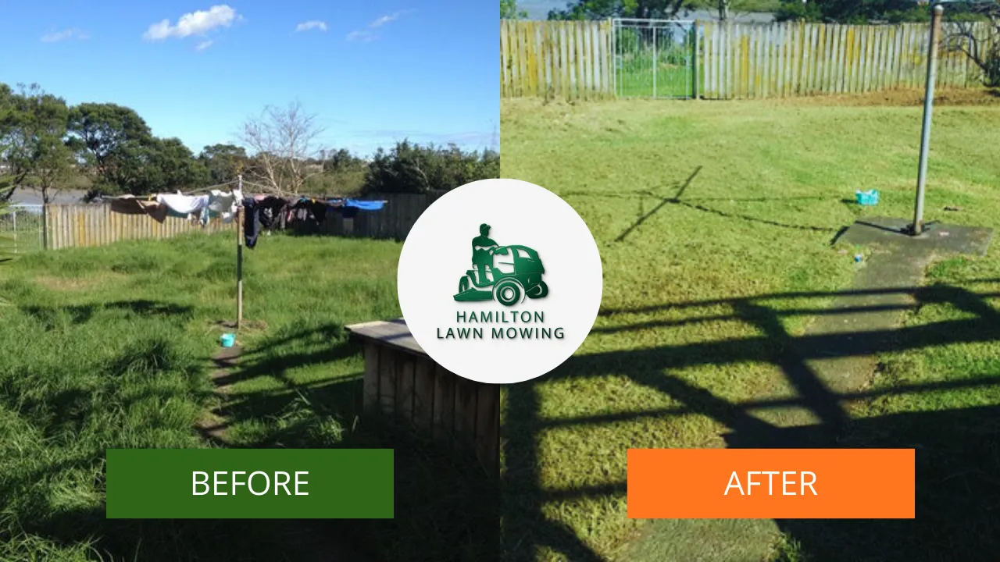

Get the whole section back under control
When a section has been left for a while, mowing the lawn is only part of the job. A section clean-up gets the whole outdoor area tidy again in one visit: lawns, edges, gardens, hedges and the green waste that comes with them.
We do clean-ups for homeowners, landlords and property managers across Hamilton. Every clean-up is different, so each one is quoted per job after we know what is involved.
What a clean-up can include
- Mowing long or overgrown lawns and trimming the edges.
- Cutting back overgrown shrubs and hedge trimming.
- Weeding garden beds and clearing out tired, overgrown gardens.
- Weed spraying paths, driveways and fence lines.
- Raking up leaves and clearing paths and hard surfaces.
- Green waste removal, so nothing is left in piles behind the shed.
Our removal service is for green waste. If you also have other rubbish to get rid of, mention it when you ask for a quote and we will let you know what we can do.
When people book a clean-up
- Selling a house, so the section looks its best for photos and open homes.
- End of tenancy, to get the grounds back to the standard in the tenancy agreement.
- Moving in to a place where the yard has been neglected.
- Start of spring or summer, to reset the section before the growing season.
Recent clean-ups
A backyard clean-up in Pukete and a catch mow with green waste removal:


Keep it tidy afterwards
Once the section is back under control, regular section maintenance keeps it that way. We can mow on a schedule and look after the gardens and hedges as part of the same visit, which usually costs less than another big clean-up later.
Section Clean-Up FAQs
What is included in a section clean-up?
It depends on what your section needs. A clean-up can include mowing, edging, hedge trimming, weeding, weed spraying, clearing leaves and removing the green waste. We confirm exactly what is included in your quote.
How much does a section clean-up cost?
Clean-ups are quoted per job because every section is different. The price depends on the size of the area, how overgrown it is and how much green waste there is. The quote is free.
Do you take the green waste away?
Yes. We remove green waste such as grass clippings, branches, hedge trimmings, weeds and leaves. Green waste removal is quoted per job.
Can you do a clean-up before I sell or move out?
Yes. Clean-ups before a sale or at the end of a tenancy are common jobs for us. Let us know your deadline when you ask for a quote.
Do you offer regular section maintenance?
Yes. After a clean-up we can mow and maintain the section on a regular schedule so it stays tidy.
Get your section sorted
Tell us what the section looks like now and what you need it to look like. Photos help. We will come back with a free quote.